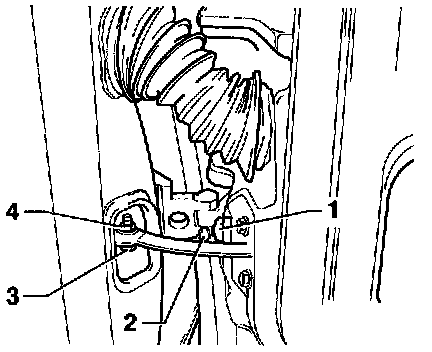

Removing and Installing

- Disconnect harness connector at A-pillar. On vehicles with central locking, disconnect bi-pressure line in harness connector.
- Loosen nut -4- and remove bolt -3-.
- Loosen Torx bolts -1- and remove door. Use Torx bit T45.
Max. length: 35 mm (1-3/8 in.)
- Remove screw -2- from upper and lower hinges.
Tightening torque: 23 Nm (17 ft lb)
- Lift door upward and out of hinge brackets.